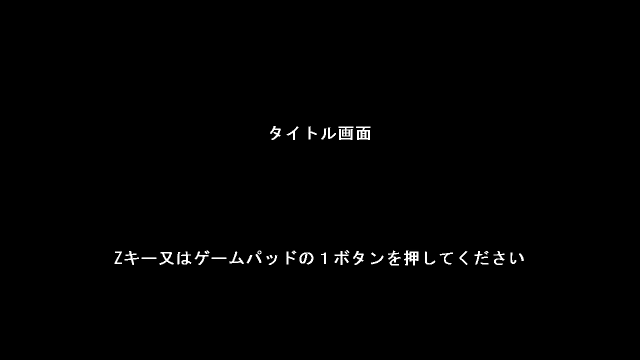

２Ｄ横スクロールアクションサンプルプログラム６
ゴールを追加する

マップの中にゴールを追加しました。
ゴールに触れるとタイトル画面に戻ります。
今回も変更した箇所を赤色で表示しています。
#include "DxLib.h"
#define SCREEN_WIDTH (1280) // 画面の横幅
#define SCREEN_HEIGHT (720) // 画面の縦幅
#define CHIP_SIZE (32) // 一つのチップのピクセル数
#define MAP_WIDTH (40) // マップの横チップ数
#define MAP_HEIGHT (23) // マップの縦チップ数
#define GRAVITY (0.8F) // プレイヤーキャラに掛かる重力加速度
#define JUMP_POWER (20.0F) // プレイヤーキャラのジャンプ力
#define SPEED_X (8.0F) // プレイヤーキャラのX軸方向の移動スピード
#define PLAYER_SIZE (30) // プレイヤーのサイズ
float PlayerPositionX, PlayerPositionY ; // プレイヤーのX座標とY座標
float PlayerSpeedY ; // プレイヤーのY軸方向の速度
float PlayerMoveX, PlayerMoveY ; // プレイヤーのX座標とY座標の移動量
bool PlayerIsJump ; // プレイヤーがジャンプしているかどうかのフラグ( true:ジャンプしている false:ジャンプしていない )
bool IsTitleScreen ; // タイトル画面表示中かどうかのフラグ( true:タイトル画面表示中 false:タイトル画面ではない )
// マップ( 0:空洞 1:ブロック(足場)
2:ゴール )
char MapData[ MAP_HEIGHT ][ MAP_WIDTH ] =
{
{ 1,1,1,1,1, 1,1,1,1,1, 1,1,1,1,1, 1,1,1,1,1, 1,1,1,1,1, 1,1,1,1,1, 1,1,1,1,1, 1,1,1,1,1 },
{ 1,0,0,0,0, 0,0,0,0,0, 0,0,0,0,0, 0,0,0,0,0, 0,0,0,0,0, 0,0,0,0,0, 0,0,0,0,0, 0,0,0,0,1 },
{ 1,0,0,1,0, 0,0,0,0,0, 0,0,0,0,0, 0,0,0,0,0, 0,0,0,1,0, 0,0,0,0,0, 0,0,0,0,0, 0,0,0,0,1 },
{ 1,0,0,1,0, 0,0,0,0,0, 0,0,0,0,0, 0,0,1,0,0, 0,0,0,1,0, 0,0,0,0,0, 0,0,0,0,0, 0,0,1,0,1 },
{ 1,0,0,1,1, 1,0,0,0,0, 0,0,0,0,0, 0,0,1,1,1, 1,1,1,1,1, 1,0,0,0,0, 0,0,0,0,0, 0,0,1,0,1 },
{ 1,0,0,0,0, 0,0,0,1,1, 0,0,0,0,0, 0,0,1,0,0, 0,0,0,0,0, 0,0,0,1,1, 0,0,0,0,0, 0,0,1,0,1 },
{ 1,0,0,0,0, 0,0,0,0,0, 0,0,1,1,0, 0,0,1,0,0, 0,0,0,0,0, 0,0,0,0,0, 0,0,1,1,0, 0,0,1,0,1 },
{ 1,0,0,0,0, 0,0,0,0,0, 0,0,0,0,0, 0,1,1,0,0, 0,0,0,0,0, 0,0,0,0,0, 0,0,0,0,0, 0,0,1,0,1 },
{ 1,0,0,0,0, 0,0,0,0,0, 0,0,0,0,0, 1,1,0,0,0, 0,0,0,0,0, 0,0,0,0,0, 0,0,0,0,0, 0,0,0,0,1 },
{ 1,0,0,0,0, 0,0,1,1,0, 0,0,0,0,0, 1,0,0,0,0, 0,0,0,0,0, 0,0,1,1,0, 0,0,0,0,0, 1,0,0,0,1 },
{ 1,0,0,0,0, 1,1,1,1,1, 0,0,0,0,1, 1,0,0,0,0, 0,0,0,0,0, 1,1,1,1,1, 0,0,0,0,1, 1,0,0,0,1 },
{ 1,0,0,0,0, 1,1,1,1,1, 0,0,0,1,1, 1,0,0,0,0, 0,0,0,0,0, 1,1,1,1,1, 0,0,0,1,1, 1,0,0,0,1 },
{ 1,0,0,0,0, 0,0,0,0,0, 0,0,0,1,1, 1,0,0,0,0, 0,0,0,0,0, 0,0,0,0,0, 0,0,0,1,1, 1,0,0,0,1 },
{ 1,0,0,0,0, 0,0,0,0,0, 0,0,0,0,0, 0,0,0,0,0, 0,0,0,0,0, 0,0,0,0,0, 0,0,0,0,0, 0,0,0,0,1 },
{ 1,1,1,1,1, 0,0,0,0,0, 0,0,0,0,0, 0,0,0,0,0, 0,1,1,1,1, 0,0,0,0,0, 1,1,1,1,1, 1,1,1,1,1 },
{ 1,0,0,0,0, 0,0,0,0,0, 0,0,1,1,0, 0,0,1,0,0, 0,0,0,0,0, 0,0,0,0,0, 0,0,1,1,0, 0,0,1,0,1 },
{ 1,0,0,0,0, 0,0,0,0,0, 0,0,0,0,0, 0,0,1,0,0, 0,0,0,0,0, 0,0,0,0,0, 0,0,0,0,0, 0,0,1,0,1 },
{ 1,0,0,0,0, 0,0,0,0,0, 0,0,0,0,0, 0,0,0,0,0, 0,0,0,0,0, 0,0,0,0,0, 0,0,0,0,0, 0,0,0,0,1 },
{ 1,0,0,0,0, 0,0,1,1,0, 0,0,0,0,0, 1,0,0,0,0, 0,0,0,0,0, 0,0,1,1,0, 0,0,0,0,0, 1,0,0,0,1 },
{ 1,0,0,0,0, 1,1,1,1,1, 0,0,0,0,1, 1,0,0,0,0, 0,0,0,0,0, 1,1,1,1,1, 0,0,0,0,1, 1,0,0,0,1 },
{ 1,0,0,0,0, 1,1,1,1,1, 0,0,0,1,1, 1,0,0,0,0, 0,0,0,0,0, 1,1,1,1,1, 0,0,0,1,1, 1,0,0,0,1 },
{ 1,0,0,0,0, 0,0,0,0,0, 0,0,0,1,1, 1,0,0,0,0, 0,0,0,0,0, 0,0,0,0,0, 0,0,0,1,1, 1,0,
2,0,1 },
{ 1,1,1,1,1, 1,1,1,1,1, 1,1,1,1,1, 1,1,1,1,1, 1,1,1,1,1, 1,1,1,1,1, 1,1,1,1,1, 1,1,1,1,1 },
} ;
// 指定の座標のマップの値を取得する関数
int GetMapData( float X, float Y )
{
int ChipX, ChipY ;
// ピクセル座標をマップのチップ座標に変換
ChipX = ( int )X / CHIP_SIZE ;
ChipY = ( int )Y / CHIP_SIZE ;
// マップからはみ出ていたら 1 を返す
if( ChipX >= MAP_WIDTH || ChipY >= MAP_HEIGHT || ChipX < 0 || ChipY < 0 ) return 1 ;
// 指定の座標のチップの値を返す
return MapData[ ChipY ][ ChipX ] ;
}
// X軸方向移動用のマップとの当たり判定
void MapHitCheckX( float X, float Y )
{
// 移動していなかったら何もせず終了
if( PlayerMoveX == 0.0f ) return ;
// 移動後のX座標を算出
float MovedX = X + PlayerMoveX ;
// 指定の座標がブロックではなかったら何もせずに終了
if( GetMapData( MovedX, Y ) != 1 ) return ;
// 指定の座標がブロックだった場合はブロックにピッタリ付く処理を行う
if( PlayerMoveX > 0.0F )
{
// ブロックの左辺に当たっていた場合
float BlockLeftX = ( float )( ( int )MovedX / CHIP_SIZE ) * CHIP_SIZE ; // ブロックの左辺の座標を算出
PlayerMoveX = BlockLeftX - X - 1.0F ; // X座標移動の移動量をブロックにピッタリ付く値に補正する
}
else
if( PlayerMoveX < 0.0F )
{
// ブロックの右辺に当たっていた場合
float BlockRightX = ( float )( ( int )MovedX / CHIP_SIZE + 1 ) * CHIP_SIZE ; // ブロックの右辺の座標を算出
PlayerMoveX = BlockRightX - X + 1.0F ; // X座標移動の移動量をブロックにピッタリ付く値に補正する
}
}
// Y軸方向移動用のマップとの当たり判定( 戻り値 0:当たらなかった 3:上辺に当たった 4:下辺に当たった
int MapHitCheckY( float X, float Y )
{
// 移動後のY座標を算出
float MovedY = Y + PlayerMoveY ;
// 指定の座標がブロックではなかった場合は 0 を返す
if( GetMapData( X, MovedY ) != 1 ) return 0 ;
// 指定の座標がブロックだった場合はブロックからピッタリ付く処理を行う
if( PlayerMoveY > 0.0F )
{
// ブロックの上辺に当たっていた場合
float BlockTopY = ( float )( ( int )MovedY / CHIP_SIZE ) * CHIP_SIZE ; // 上辺の Y 座標
PlayerMoveY = BlockTopY - Y - 1.0F ; // Y座標移動の移動量をブロックにピッタリ付く値に補正する
return 1 ; // 上辺に当たったと返す
}
else
if( PlayerMoveY < 0.0F )
{
// ブロックの下辺に当たっていた場合
float BlockBottomY = ( float )( ( int )MovedY / CHIP_SIZE + 1 ) * CHIP_SIZE ; // 下辺の Y 座標
PlayerMoveY = BlockBottomY - Y + 1.0F ; // Y座標移動の移動量をブロックにピッタリ付く値に補正する
return 2 ; // 下辺に当たったと返す
}
// ここに来たらブロックの下辺に当たっていたことにする
return 2 ;
}
// エントリーポイント
int WINAPI WinMain( HINSTANCE hInstance, HINSTANCE hPrevInstance, LPSTR lpCmdLine, int nCmdShow )
{
int PadInput = 0 ;
int PadPrevInput ;
int PadEdgeInput ;
// ウインドウモードで起動
ChangeWindowMode( TRUE ) ;
// 画面解像度は 1280x720 に設定
SetGraphMode( SCREEN_WIDTH, SCREEN_HEIGHT, 32 ) ;
// ＤＸライブラリの初期化
if( DxLib_Init() < 0 ) return -1 ;
// タイトル画面表示中フラグを立てる
IsTitleScreen = true ;
// フォントのサイズを 32 に変更
SetFontSize( 32 ) ;
// 描画対象を裏画面に変更
SetDrawScreen( DX_SCREEN_BACK ) ;
// メインループ
while( ProcessMessage() == 0 )
{
// 画面をクリア
ClearDrawScreen() ;
// キーボード・ゲームパッドの入力情報を更新
PadPrevInput = PadInput ; // 一つ前のフレームの入力状態を保存
PadInput = GetJoypadInputState( DX_INPUT_KEY_PAD1 ) ; // ゲームパッドとキーボードの入力を取得
PadEdgeInput = PadInput & ~PadPrevInput ; // 今回のフレームで押されたボタンだけを抽出
// タイトル画面表示中フラグが立っているかどうかで処理を分岐
if( IsTitleScreen )
{
// タイトル画面の場合
// 『タイトル画面』という文字列を画面に表示
DrawString( 535, 250, "タイトル画面", GetColor( 255,255,255 ) ) ;
// 『Zキー又は1ボタンを押してください』という文字列を画面に描画
DrawString( 228, 500, "Zキー又はゲームパッドの１ボタンを押してください", GetColor( 255,255,255 ) ) ;
// Zキー若しくはボタン１が押されていたらタイトル画面を終了する
if( PadEdgeInput & PAD_INPUT_1 )
{
IsTitleScreen = false ; // タイトル画面表示中フラグを倒す
PlayerPositionX = SCREEN_WIDTH / 2.0f ; // プレイヤーのX座標を画面中心に初期化
PlayerPositionY = SCREEN_HEIGHT / 2.0f ; // プレイヤーのY座標を画面中心に初期化
PlayerSpeedY = 0.0f ; // プレイヤーのY軸方向の速度を初期化
PlayerIsJump = false ; // プレイヤーがジャンプしているかどうかを「ジャンプしていない」に初期化
}
}
else
{
// タイトル画面ではない場合
// プレイヤーの移動量の初期化
PlayerMoveX = 0.0f ;
PlayerMoveY = 0.0f ;
// 左右入力の処理
if( PadInput & PAD_INPUT_LEFT ) PlayerMoveX -= SPEED_X ; // 左キー若しくは左ボタンが押されていたら移動量Xに左方向の値を加算する
if( PadInput & PAD_INPUT_RIGHT ) PlayerMoveX += SPEED_X ; // 右キー若しくは右ボタンが押されていたら移動量Xを右方向の値を加算する
// ジャンプ中ではなくて、且つZキー若しくはボタン１が押されていたらジャンプ
if( PlayerIsJump == false && ( PadEdgeInput & PAD_INPUT_1 ) )
{
PlayerIsJump = true ; // ジャンプ中フラグを立てる
PlayerSpeedY = -JUMP_POWER ; // Y軸方向の速度をセット
}
// ジャンプ中の場合は処理を分岐
if( PlayerIsJump )
{
PlayerMoveY += PlayerSpeedY ; // 移動量YにY軸方向の速度を加算
PlayerSpeedY += GRAVITY ; // プレイヤーのY軸方向の速度に重力値を加算
}
else
{
PlayerSpeedY = 0.0f ; // ジャンプ中ではない場合はY軸方向の速度は0にする
}
// プレイヤーの左上、右上、左下、右下部分が当たり判定のあるマスに衝突しているか調べ、衝突していたら補正する
// 最初に上下移動成分だけでチェック
// 左下・右下のチェック、もしブロックの上辺に着いていたら着地したということなので、Y軸方向のスピードを 0 にして、落下を止める
if( MapHitCheckY( PlayerPositionX - PLAYER_SIZE * 0.5f, PlayerPositionY + PLAYER_SIZE * 0.5f ) == 1 ||
MapHitCheckY( PlayerPositionX + PLAYER_SIZE * 0.5f, PlayerPositionY + PLAYER_SIZE * 0.5f ) == 1 )
{
PlayerSpeedY = 0.0F ;
}
// 左上・右上のチェック、もしブロックの下辺に当たっていたら頭を天井にぶつけたということなのでY軸方向スピードを反転させて落下させる
if( MapHitCheckY( PlayerPositionX - PLAYER_SIZE * 0.5f, PlayerPositionY - PLAYER_SIZE * 0.5f ) == 2 ||
MapHitCheckY( PlayerPositionX + PLAYER_SIZE * 0.5f, PlayerPositionY - PLAYER_SIZE * 0.5f ) == 2 )
{
PlayerSpeedY *= -1.0F ;
}
// 上下移動成分を加算
PlayerPositionY += PlayerMoveY ;
// 次に左右移動成分だけでチェック
MapHitCheckX( PlayerPositionX - PLAYER_SIZE * 0.5f, PlayerPositionY + PLAYER_SIZE * 0.5f ) ; // 左下のチェック
MapHitCheckX( PlayerPositionX + PLAYER_SIZE * 0.5f, PlayerPositionY + PLAYER_SIZE * 0.5f ) ; // 右下のチェック
MapHitCheckX( PlayerPositionX - PLAYER_SIZE * 0.5f, PlayerPositionY - PLAYER_SIZE * 0.5f ) ; // 左上のチェック
MapHitCheckX( PlayerPositionX + PLAYER_SIZE * 0.5f, PlayerPositionY - PLAYER_SIZE * 0.5f ) ; // 右上のチェック
// 左右移動成分を加算
PlayerPositionX += PlayerMoveX ;
// プレイヤーの左下と右下の下に地面があるか調べる
if( GetMapData( PlayerPositionX - PLAYER_SIZE * 0.5F, PlayerPositionY + PLAYER_SIZE * 0.5F + 1.0F ) != 1 &&
GetMapData( PlayerPositionX + PLAYER_SIZE * 0.5F, PlayerPositionY + PLAYER_SIZE * 0.5F + 1.0F ) != 1 )
{
PlayerIsJump = true ; // 足場が無かったらジャンプ中にする
}
else
{
PlayerIsJump = false ; // 足場が在ったら接地中にする
PlayerSpeedY = 0.0F ; // 落下速度も0にする
}
// プレイヤーの中心がゴールチップに触れていたらタイトル画面に戻る
if( GetMapData( PlayerPositionX, PlayerPositionY ) == 2 )
{
IsTitleScreen = true ; // タイトル画面フラグを立てる
}
// プレイヤーは常に画面の中心に描画する
DrawBox( SCREEN_WIDTH / 2 - PLAYER_SIZE / 2, SCREEN_HEIGHT / 2 - PLAYER_SIZE / 2,
SCREEN_WIDTH / 2 + PLAYER_SIZE / 2, SCREEN_HEIGHT / 2 + PLAYER_SIZE / 2,
GetColor( 0, 255, 0 ), TRUE ) ;
// ブロックの描画座標に加算する値を算出
int MapDrawAddX = SCREEN_WIDTH / 2 - ( int )PlayerPositionX ; // X座標には画面の幅の半分を足し、プレイヤーのX座標を引く
int MapDrawAddY = SCREEN_HEIGHT / 2 - ( int )PlayerPositionY ; // Y座標には画面の高さの半分を足し、プレイヤーのY座標を引く
// マップの描画
for( int i = 0 ; i < MAP_HEIGHT ; i ++ )
{
for( int j = 0 ; j < MAP_WIDTH ; j ++ )
{
int Color = 0 ;
// チップの種類によって色分け
switch( MapData[ i ][ j ] )
{
case 0 : continue ; // 何も無いチップは何も描画せずに次のループに進む
case 1 : Color = GetColor( 255,255,255 ) ; break ; // ブロックチップは白
case 2 : Color = GetColor( 255,255, 0 ) ; break ; // ゴールチップは黄色
}
// チップを描画
DrawBox( j * CHIP_SIZE + MapDrawAddX, i * CHIP_SIZE + MapDrawAddY,
j * CHIP_SIZE + CHIP_SIZE + MapDrawAddX, i * CHIP_SIZE + CHIP_SIZE + MapDrawAddY, Color, TRUE ) ;
}
}
// 裏画面の内容を表画面に反映
ScreenFlip() ;
}
}
// ＤＸライブラリの後始末
DxLib_End() ;
// ソフトの終了
return 0 ;
}
戻る